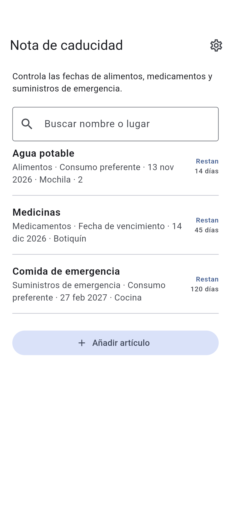

DOTNULL / Nota de caducidad
Consulta las fechas de un vistazo.
Controla las fechas de alimentos, medicamentos y suministros de emergencia.
La aplicación está en desarrollo.
Acerca de la aplicación ↓
HOW IT WORKS
Acerca de la aplicación
01
Añade nombre y fecha
02
Elige el tipo de fecha
03
Consulta primero las fechas próximas
Acerca de la aplicación
- Categoría
- Alimentos · Medicamentos · Suministros de emergencia · Otros
- Lugar de almacenamiento (opcional)
- Buscar nombre o lugar
- Tipo de fecha
- Consumo preferente · Fecha de caducidad · Fecha de vencimiento
Privacidad
Los registros se guardan en el dispositivo y se pueden consultar sin conexión.
Los datos pueden perderse al borrar la aplicación o si falla el dispositivo.
Tus artículos se guardan en este dispositivo. El proveedor de anuncios puede usar datos.
Comprueba la fecha indicada en cada producto.